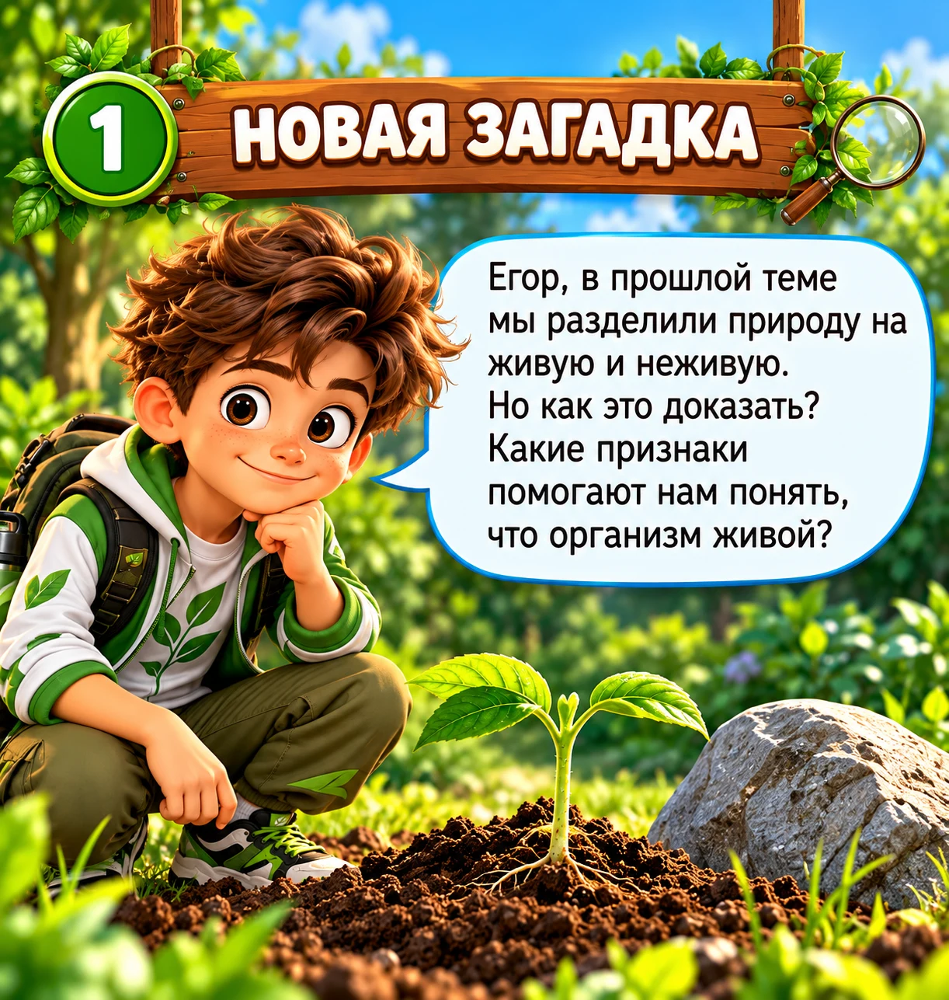
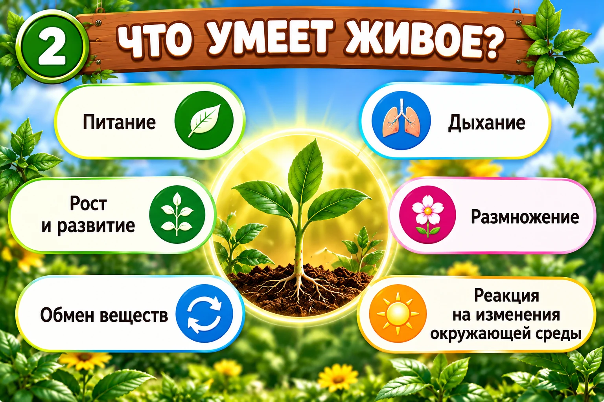
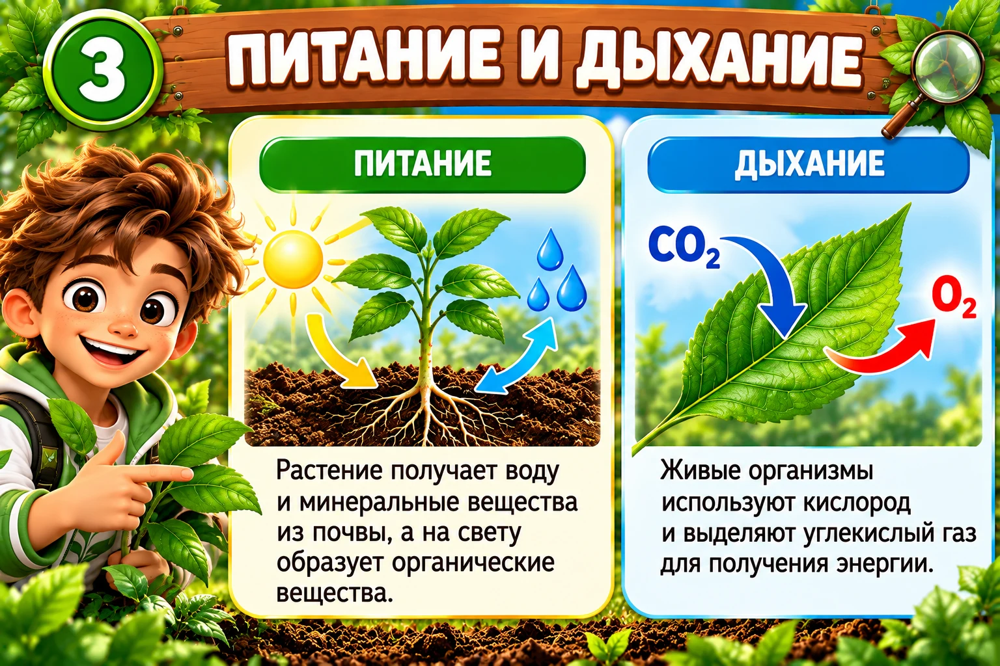
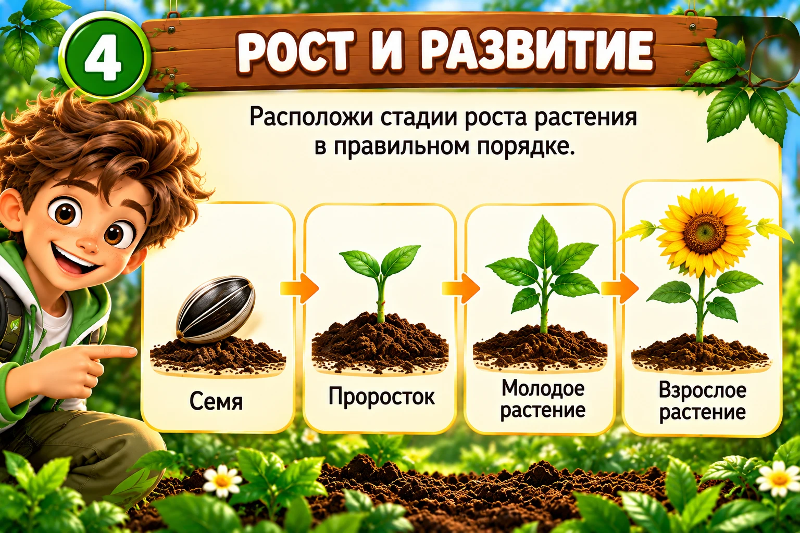
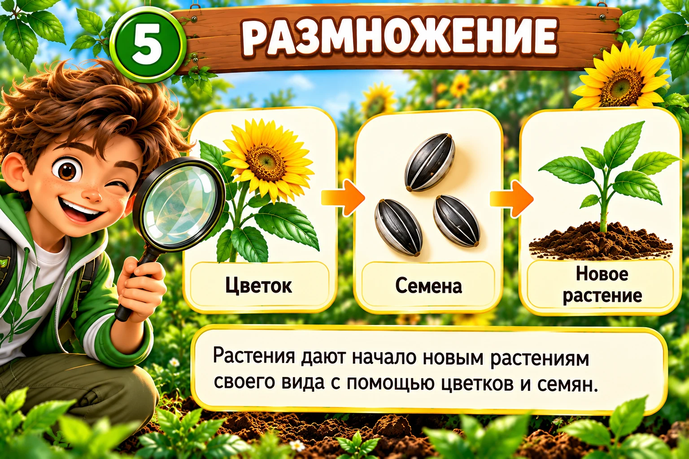
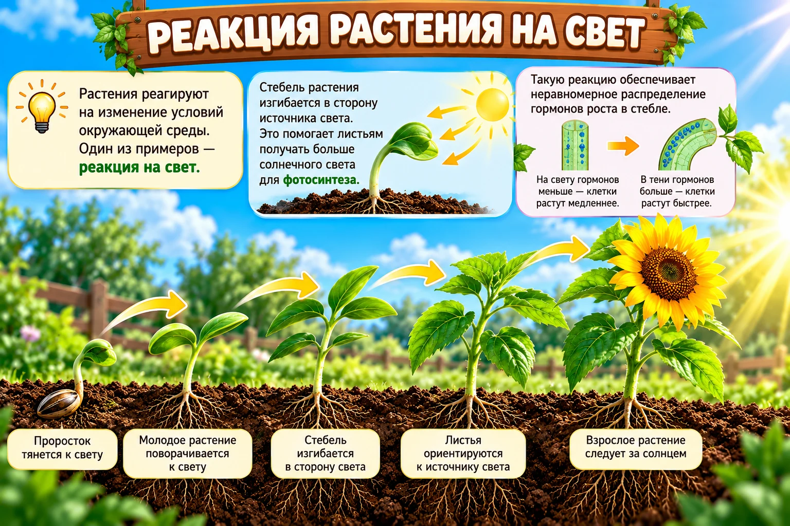

Новая загадка
Признаки живых организмов
Тренер: Егор, в прошлой теме мы научились находить объекты живой природы. Но теперь задача сложнее: как доказать, что организм действительно живой?
Сегодня будем не заучивать список, а искать доказательства.

Исследование 1
Что умеют живые организмы?
🍽 Питание
Получают вещества и энергию.
🌬 Дыхание
Получают энергию в процессе жизнедеятельности.
🌱 Рост и развитие
Растут и изменяются в течение жизни.
🐣 Размножение
Дают начало новым организмам своего вида.
🔄 Обмен веществ
В организме постоянно происходят превращения веществ.
☀️ Реакция на среду
Реагируют на изменения окружающих условий.

Егор, важен не один отдельный пример, а совокупность признаков живого организма.
Исследование 2
Питание и дыхание

Тренер: Егор, питание и дыхание — важные процессы жизнедеятельности. Рассмотри схему и найди, что получает организм и что происходит при дыхании.
Исследование 3
Рост и развитие
Живой организм не просто становится больше — в течение жизни он развивается и изменяется.

Задание: Егор, расставь стадии развития растения по порядку.
🌻 Взрослое растение
🌰 Семя
🌱 Проросток
🌿 Молодое растение
Задание: расположи стадии по порядку. На компьютере можно перетащить карточки мышкой или нажимать на них по очереди. На телефоне просто нажимай на карточки в правильном порядке.
Перетащи сюда карточки в правильном порядке
Исследование 4
Размножение
Живые организмы способны давать начало новым организмам своего вида.

Посмотри на цикл: взрослое растение образует цветки и семена, а из семени при подходящих условиях развивается новое растение.
Исследование 5
Растение тоже реагирует

Егор, растение не бегает и не ходит, но это не значит, что оно «ничего не чувствует». Изменение направления роста к источнику света — пример реакции на условия среды.
Видео · 6:56
Чем живое отличается от неживого?
Егор, перед просмотром обрати внимание на три вопроса:
1. Какие признаки живого названы?
2. Почему растение считается живым, хотя оно не ходит и не бегает?
3. Какие признаки помогают отличить живой организм от неживого объекта?
После видео
Быстрая проверка
Егор, выбери утверждение, которое лучше всего объясняет, почему растение — живой организм.
Главная миссия
Какой признак проявляется?
Нажми на ситуацию, а затем на подходящий признак.
Финальный матч
Мини-тест · 7 вопросов
Тренер: Егор, проверим, насколько уверенно ты теперь узнаёшь признаки живых организмов. Учитывается только первый выбранный ответ.
Миссия выполнена
Отличная работа, Егор!
Теперь ты умеешь не просто назвать живой объект, а объяснить, по каким признакам мы относим его к живым организмам.
Следующая тема: «Ботаника — наука о растениях».